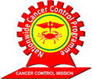
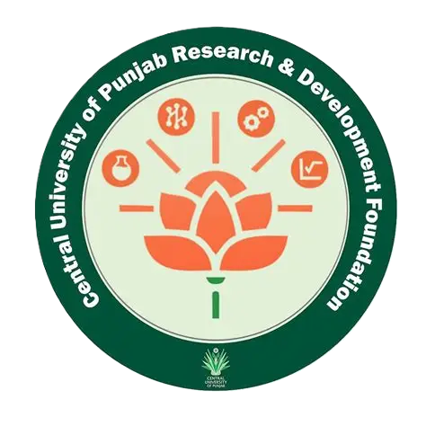

Portable X-Ray
Imaging technology designed for flexible deployment.
NoorNext · Intelligent Diagnostics
Introducing Eco-Scanner, an intelligent modular diagnostic platform. Its current working prototype is based on portable X-ray, with AI-assisted analysis and compatible modules in development.

Distance, limited imaging facilities, equipment shortages and cost can make timely diagnosis harder to reach. NoorNext is developing portable diagnostic technology to help bring essential capabilities closer to underserved communities.
Our mission is to help make healthcare more accessible, affordable and timely.
One platform. Multiple diagnostic possibilities. Eco-Scanner combines portable X-ray technology with software designed to support image assessment, within a mobility-focused system.
Imaging technology designed for flexible deployment.
Software in development to support image assessment.
A platform designed to accommodate compatible future modules.
Development focused on portability and varied operating environments.

NoorNext is developing a modular architecture intended to connect compatible imaging systems, sensors, accessories and intelligent software in one coordinated platform.
Eco-Scanner's current prototype is focused on portable X-ray imaging.
Ultrasound integration, additional sensors and point-of-care modules are areas for exploration, not currently available product capabilities.
NoorNext is advancing Eco-Scanner through prototype development, research collaborations and engagement with technology and healthcare stakeholders.
Eco-Scanner has progressed beyond the concept stage.
The platform has been presented to an international audience.
Building relationships with research foundations, incubators and healthcare stakeholders.
Our partners support NoorNext's work across research, incubation, business development, and medical and technical collaboration.

Supporting healthcare outreach, awareness and access initiatives.
Technology collaboration supporting NoorNext's digital health work.

Incubation partner supporting business development and medical and technical progress.

Incubation partner supporting business development and medical and technical progress.
Incubation partner supporting business development and medical and technical progress.
Join us in developing diagnostic technology with the potential to make healthcare more accessible.